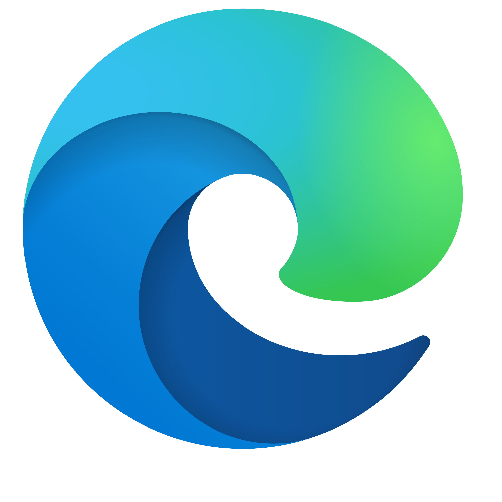
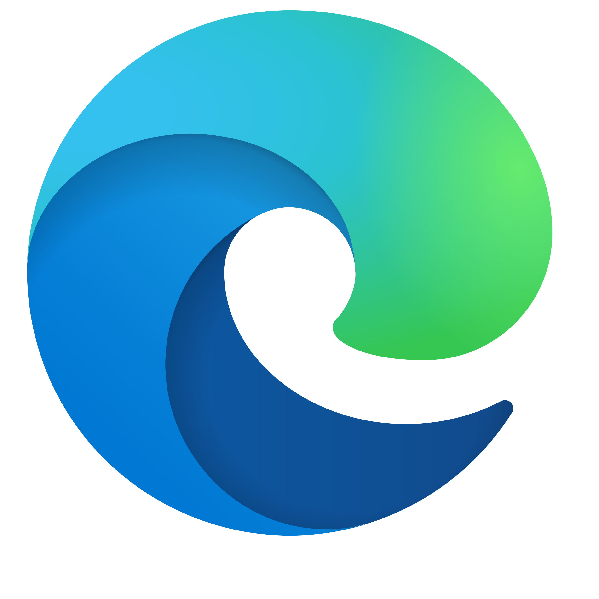

xml
version
="1.0"
encoding
="UTF-8"
?>woozu
>resume
>name
>woo minju
</name
>birth
>1998.01.20
</birth
>tell
>010-8610-2041
</tell
>woozu5959@naver.com
</resume
>woozu
>

<about>
독도가 대한민국의 고유 영토인 역사적이고 지리적이며 국제법적인 근거와 이유를 제공하며, 우리 영토인 독도의 자연경관을 엿볼 수 있도록 제작된 사이트이다.
<concept>
기존 페이지 디자인에서의 단조로운 느낌과 정보를 얻기 위한 복잡한 과정을 원페이지 형식으로 재구성하여 다양한 정보를 더욱 한눈에 볼 수 있으며 실시간의 독도의 날씨 및 온도를 알려주는 위젯을 통해 편의성을 높이고 독도의 자연경관을 영상 및 이미지를 통하여 생동감 있게 표현하였다.
정보의 정확성
편의성
생동감
<color>
<font>
<about>
러쉬는 자연에서 얻은 신선한 재료와 동물실험을 하지 않는 정직한 재료를 사용하여 모든 제품을 손으로 만드는 기업이며, 공정거래, 인권보호, 포장 최소화 등 다양한 캠페인 활동을 통해 기업윤리와 신념을 알리는 사이트이다.
<concept>
기존 페이지에서는 제품의 관련된 정보가 흩어져 있어 제품의 정확한 정보를 찾는데에 어려움이 있어 원페이지 형식으로 재구성하여 제품의 탄생개요 및 제품으로 인한 후원단체정보 등을 한 눈에 볼 수 있으며 영상 및 효과를 이용하여 페이지의 자연친화적인 분위기를 더해주었다.
정보 전달성
비주얼
자연친화적
<color>
<font>